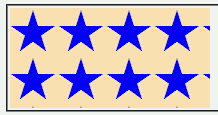

backgroundプロパティで背景画像を指定する際、url()内でパスを 背景画像が表示されない。' ' で囲むと
' ' で囲まない場合にも発生するそうです。（2002-10-31追記）
<div style="background:#ff0000 url(../img/img01.png) repeat"></div>
div要素に対し、backgroundプロパティで背景を指定しています。正常であれば、背景に星印の画像が表示されるはずです。
WinIE6.0での表示（標準モード）
Mac版N7.0で発生が確認されたようです。
body { color: #000000; background: #f5f5f5 url(../images/hoge.jpg) repeat }
102 名前：Name_Not_Found ﾒｪﾙ：sage 投稿日：02/10/20 17:18 ID:???
>101
Mac版ネスケ７／IE５.1.6に外部.cssを読み込ませて試したけど、簡略化
プロパティを認識しない。Win版IEとOperaは持ってないから分からん。
body { background-color: #f5f5f5;
background-image: url(../images/hoge.jpg);
background-repeat: repeat;}